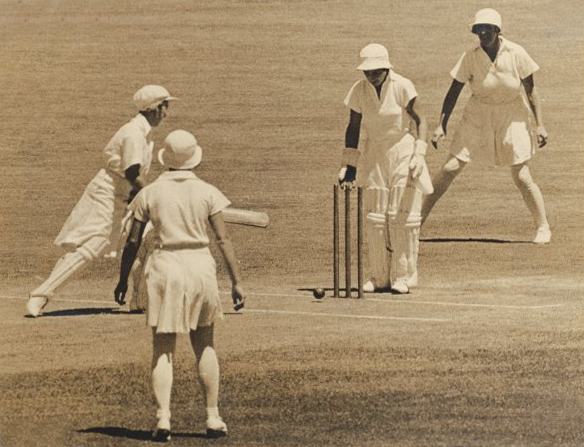
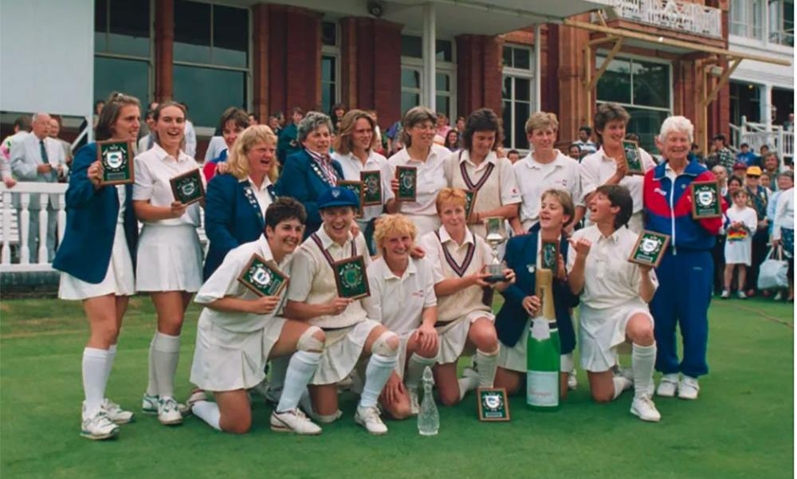

Women's Cricket
Women's cricket is the form of the team sport of cricket when played by women only. It is played at the professional level in multiple countries around the world and 108 national teams participate internationally. 11 of them have WTest and WODI status and others have WT20I status. The first recorded match was in England on 26 July 1745. In November 2021, the International Cricket Council (ICC) retrospectively applied first-class and List A status to women's cricket, aligning it with the men's game
History of women's cricket
The first recorded match of women's cricket was played in England on July 26, 1745, between eleven maids of Bramley and eleven maids of Hambledon, all dressed in white. The first known women's cricket club was formed in 1887 in Yorkshire, named the White Heather Club. In 1926, the Women's Cricket Association was founded, and the England team played their first international tour to Australia in 1934-5, playing the first Women's Test match between England and Australia in December 1934. In 1958, the International Women's Cricket Council (IWCC) was formed to oversee the touring schedule. Women's cricket has been played internationally since the inaugural women's Test match between England women and Australia women in December 1934
First recorded match of women's cricket

The first recorded match of women's cricket was played on July 26, 1745, between the women of two Surrey villages, Bramley and Hambledon, near Guildford in Surrey. The match was reported in The Reading Mercury, and the teams were "eleven maids of Bramley and eleven maids of Hambledon, all dressed in white". The outcome of the match was not recorded, but the report stated that "if the outcome of the present movement is to induce ladies more generally to play cricket, we shall consider that a good result has been attained"
First countries to play women's cricket internationally
The first international women's cricket tour was undertaken by the England team to Australia in 1934-5, where they played the first Women's Test match between England and Australia in December 1934. The International Women's Cricket Council (IWCC) was formed in 1958 to coordinate women's cricket, and the first ever IWCC meeting took place in Melbourne in February 1958 with women from England, Australia, New Zealand, South Africa, and the Netherlands in attendance. Therefore, the first countries to play women's cricket internationally were England and Australia. New Zealand women joined them the following year, and women's cricket has been played internationally since then.
The country hosted the first international women's cricket tour

The first international women's cricket tour was hosted by Australia in 1934-5, where they played the first Women's Test match between England and Australia in December 1934. The England team accepted the invitation to tour Australia during the summer of 1934-35 and take part in a triangular series, while New Zealand declined the offer. Therefore, Australia was the country that hosted the first international women's cricket tour. The International Women's Cricket Council (IWCC) was formed in 1958 to coordinate women's cricket, and the first ever IWCC meeting took place in Melbourne, Australia, in February 1958 with women from England, Australia, New Zealand, South Africa, and the Netherlands in attendance.
The current status of women's cricket around the world

Women's cricket is played professionally in multiple countries around the world, with 108 national teams participating internationally. There are different formats of the game, including Test matches, One Day Internationals (ODIs), and Twenty20 Internationals (T20Is). The International Cricket Council (ICC) is the governing body for women's cricket, and they provide official match results and fixtures on their website. Women's cricket has come a long way since its inception, and the International Women's Cricket Council (IWCC) was formed in 1958 to oversee the touring schedule. Currently, 11 national teams have WTest and WODI status, while others have WT20I status. Women's cricket still receives less media coverage than men's cricket, and the England women's team is paid less than the England men's team. However, the global reach of women's cricket has been increasing, with record-breaking viewing hours for the Women's World Cup in 2017.